調査概要
景気ウォッチャー調査の仕組みとデータ構成
景気ウォッチャーとは
地域の景気動向を肌で感じる立場にある人々。小売業・飲食業・サービス業・製造業・不動産等、全国2,050人が毎月回答。
DI（景気ウォッチャー指数）
5段階評価（◎良くなっている〜×悪くなっている）の加重平均。DI>50で景気回復、DI<50で景気後退を示す。
地域カバレッジ
全国 + 北海道・東北・北関東・南関東・甲信越・東海・北陸・近畿・中国・四国・九州・沖縄の12地域。
分野区分
家計動向関連（小売・飲食・サービス・住宅）/ 企業動向関連（製造・非製造）/ 雇用関連の3大分野。
データ出典: 内閣府「景気ウォッチャー調査」統計表。watcher3（原系列2000-2026）、watcher5（季節調整値2002-2026）、watcher2-1（回答構成比）を使用。
長期トレンド分析
2000年〜2026年の景気サイクル
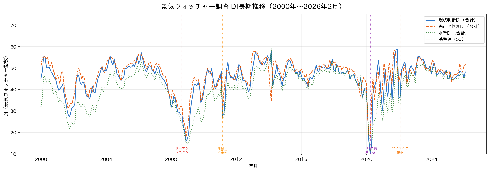
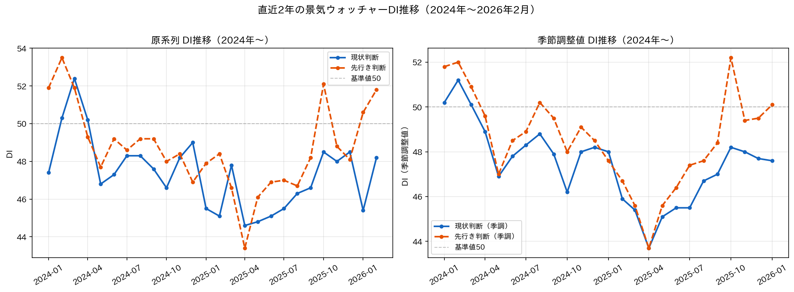
長期的に見ると、2020年のコロナ禍が過去最大のDI下落（2020年4月：現状判断DI約19台）をもたらした後、段階的に回復。2023年後半以降は45〜50近傍の「底堅い」状態が続いています。
分野別・業種別分析
家計動向・企業動向・雇用関連と6業種の比較
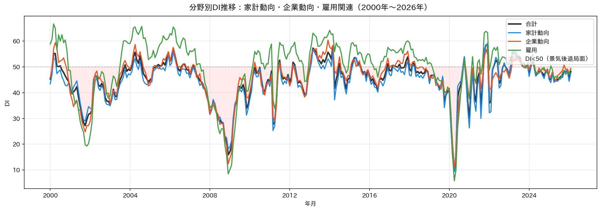
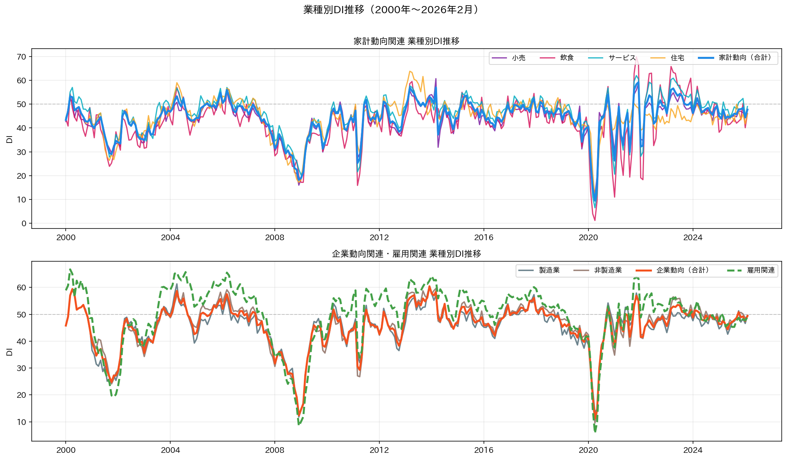
| 分野・業種 | 2026年2月 DI | 前月比 | 特徴 |
|---|---|---|---|
| 合計（全体） | 48.9 | +1.3 | 4ヶ月ぶり上昇 |
| 家計動向関連 | 48.8 | +1.7 | 天候回復でサービス・飲食が改善 |
| └ 小売関連 | 48.0 | +1.2 | スーパー・コンビニ堅調 |
| └ 飲食関連 | 49.0 | +2.1 | 外出需要の回復 |
| └ サービス関連 | 50.9 | +2.5 | 最も大きく改善 |
| └ 住宅関連 | 42.6 | -0.8 | 金利上昇の影響継続 |
| 企業動向関連 | 49.9 | +0.4 | 製造・非製造ともに横ばい |
| └ 製造業 | 49.4 | ±0.0 | 輸出環境の不透明感 |
| └ 非製造業 | 50.4 | +0.6 | インバウンド効果 |
| 雇用関連 | 47.2 | +0.4 | 労働市場の引き締まり持続 |
地域別分析
全国12地域のDI比較と推移（季節調整値）
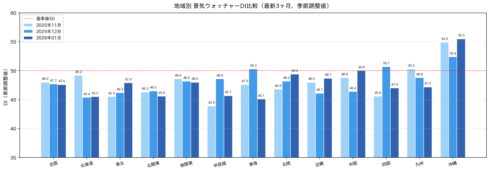
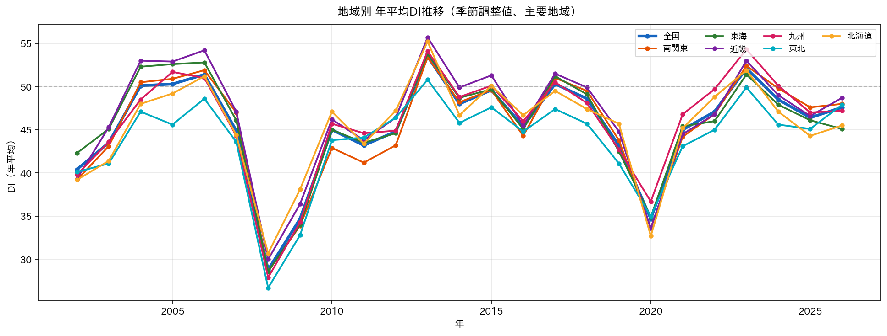
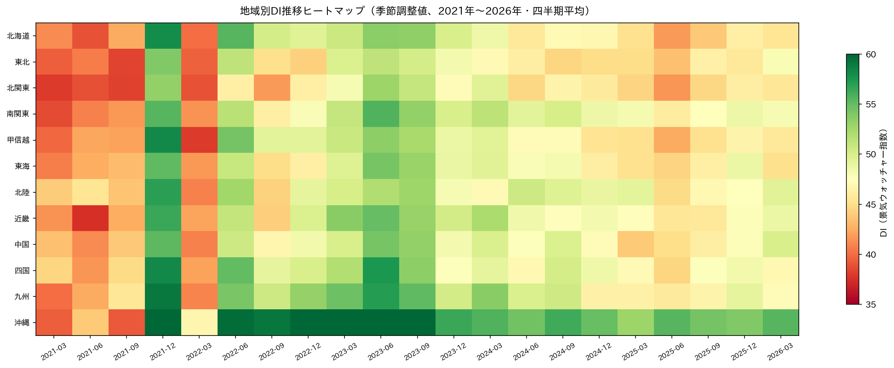
季節調整値と現状・先行き比較
季節変動を除いた基調トレンドとギャップ分析
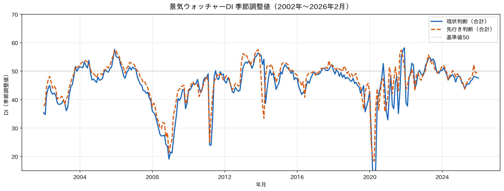
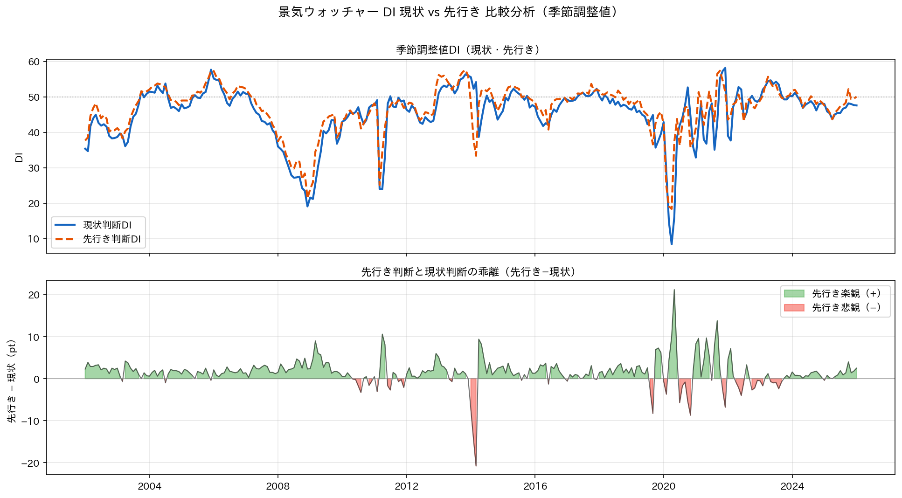
| 月 | 現状判断（季調） | 先行き判断（季調） | ギャップ（先行き−現状） | 方向感 |
|---|---|---|---|---|
| 2025年11月 | 49.1 | 50.1 | +1.0 | 楽観 |
| 2025年12月 | 48.3 | 49.2 | +0.9 | 楽観 |
| 2026年1月 | 47.6 | 50.1 | +2.5 | 楽観 |
| 2026年2月 | 48.9 | 50.0 | +1.1 | 楽観 |
先行き判断が現状判断を上回る「楽観」状態が続いていますが、その差は縮小傾向。春の値上げラッシュ（4月〜）が今後のギャップ縮小・逆転要因になりうる点に注意が必要です。
回答者構成比分析
5段階評価の構成比推移とDIの関係
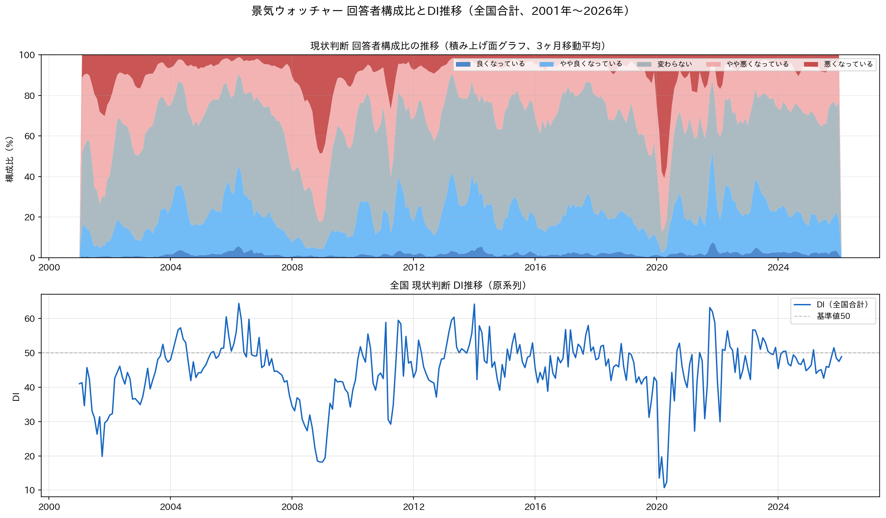
業種別・地域別 年次ヒートマップ
業種×年・地域×年の2次元可視化
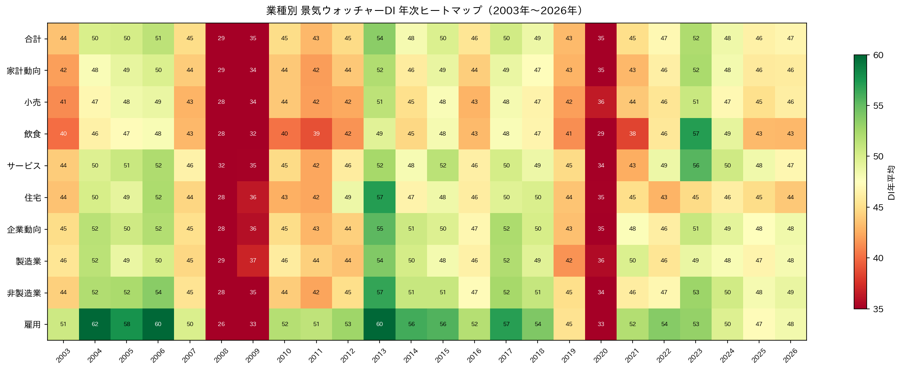
注目ポイント: 2008〜2009年（リーマン禍）・2020年（コロナ禍）の全業種赤（低DI）が明確。雇用関連は一貫して他分野より高めのDIを維持しており、労働市場の底堅さが読み取れます。
主要経済イベントの影響
26年間の重大局面とDIの反応
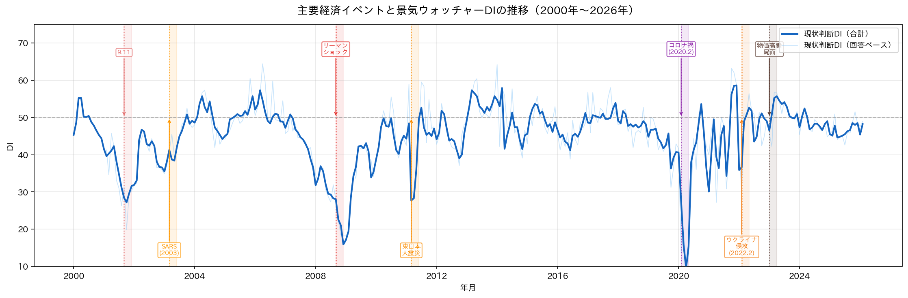
米同時多発テロ (9.11)
軽度のDI下落。消費者・企業心理への影響は短期間で、約3〜6ヶ月で回復。
リーマンショック
DI が急落し 20台前半に。全業種・全地域が同時に悪化。回復まで約1.5〜2年を要した。
東日本大震災
急落後に素早いV字回復。被災地（東北）は復興需要で数ヶ月後には逆転。
新型コロナウイルス感染拡大
過去最大の急落。2020年4月の現状判断DI は約19台（観測史上最低水準）。飲食・サービス・住宅が壊滅的打撃。回復に約1〜1.5年。
ロシアによるウクライナ侵攻
エネルギー・食料価格の高騰を通じて、じわりとDIを押し下げた。コロナ禍からの回復の足を鈍らせた。
2026年2月の最新動向
最新の調査結果と市場のコンセンサス
出典: ニッセイ基礎研究所「景気ウォッチャー調査2026年2月〜天候回復で現状改善、値上げ懸念で先行き慎重〜」/ 日本経済新聞「2月の街角景気、基調判断は『持ち直し』維持 4カ月ぶりの上昇」
天候回復が追い風
1月の寒波・降雪の影響が剥落し、外出需要が回復。サービス関連（+2.5pt）と飲食関連（+2.1pt）が主な改善要因。
値上げ懸念で先行き慎重
4月以降の食料・日用品の値上げラッシュに対する消費者の警戒感が先行き判断を抑制。先行きDIは横ばいの50.0。
労務費コストの圧迫
賃上げ実施による労務費の上昇が中小企業の収益を圧迫しているとの声が目立つ。
地政学的リスク未反映
調査時点では米国関税政策の影響は限定的。3月以降の調査でマインドへの波及が現れる可能性あり。
総合考察と政策的示唆
26年間のデータから読み解く日本経済の現在地
現状評価
2026年2月の景気ウォッチャーDI（現状判断・季節調整値）は 48.9 と4ヶ月ぶりに上昇したが、基準値の50には届かず「持ち直し」の基調が続いています。コロナ禍からの回復を経て、現在は景気の拡大・後退の境界線（50）近傍での横ばい推移が定着しつつあります。
先行きリスクと機会
プラス要因
春の行楽・観光需要、賃上げによる消費拡大（遅効）、インバウンド需要の継続
マイナス要因
4月以降の値上げラッシュ、米国関税による輸出減少リスク、労務費高騰
不確実性要因
円安・円高の方向性、中国経済の動向、地政学的リスクの変化
26年間のトレンドから見た構造的変化
① 雇用市場の変化: 雇用関連DIは長期的に他分野より高水準で安定。日本の労働市場が構造的な人手不足に移行したことを反映。
② サービス業の存在感拡大: コロナ禍後、サービス関連の回復が景気全体をけん引。デジタル・観光・ウェルネス分野が成長ドライバーに。
③ 製造業の相対的地位低下: 円安でも輸出・製造業DIは以前ほど上昇しない構造へ。サプライチェーンの多様化と海外移転が影響。
④ 地域格差の変化: 観光・サービス業が強い地域（沖縄・近畿・東海）が相対的高DIを維持。製造業依存度の高い地域とのギャップが継続。
データの限界: 本調査は主観的評価であり、速報性は高いが客観的経済指標と乖離する場合があります。回答者構成は業種・地域により固定されており、産業構造変化を完全には反映しません。月次変動には天候・行事・季節など一時的要因が混在します。